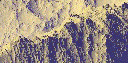

| Here we describe three kinds of random fractal processes. |
| Brownian motion has increments that are independent and follow
the normal distribution |
| Fractional Brownian motion has increments that are dependent and follow
the normal distribution |
| Levy flights have increments that are independent and have more large values than
allowed by the normal distribution |
| Brownian Motion
The dance of pollen grains in a water drop, observed by Robert Brown in 1827 and
explained by Albert Einstein in 1905 as the effect of individual water molecules hitting the
pollen. Five years before Einstein, Louis Bachelier used the same ideas as a model of the
stock market. |
 |
| Consecutive steps in Brownian motion are independent of one another. While this
seems to model some physical processes well, history is important for others.
Fractional Brownian Motion is a generalization of Brownian
motion to include memory. |
 |
| A criticism of fractional Brownian motion is that the steps still follow the
normal distribution, so large events are very rare.
Levy flights
are random processes in which large steps are much more likely. But in these processes,
each step is independent of those before it. |
 |
| An application of random fractal synthesis is in
constructing plausible
forgeries of mountains,
and even of whole planets. |
 |
|
| Here is the exam; here are the
solutions. |